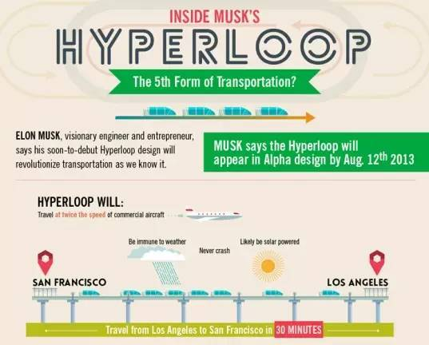

每年快到年三十，你是否归心似箭巴不得立刻就回到远方的家中？如果现在我告诉你，有一种新的交通方式，从广州到北京，只需要一个半小时，票价不到150元，你会考虑吗？
这就是去年12月打败了中美俄三大国的男人——马斯克的新玩具，Hyperloop。2013年8月，他在自己SpaceX的官网上公布了一份题为《Hyperloopａ》的白皮书，其中提到人类的5种交通方式——飞机、火车、汽车、船只和Hyperloop。
马斯克曾说，他希望他主导的这项赛事可以推动Hyperloop的技术发展，但是SpaceX的网站上明确指出他们不会将Hyperloop商业化，这样就非常让人担心，这种情况下产生的技术，如何能与HTT和HTI这样的专业性商业企业相抗衡？
不过，当竞赛接近尾声，SpaceX就能获得所有参赛团队的实验数据，这有助于他们在研究中减少大量工作量并少走很多弯路。如果马斯克改变了自己的初衷决定自建一套系统，他将会有经过试验的多种型号管道和运输舱可以选择，并在不同系统的兼容性方面领先HTT和HTI一大截。东道主的巨大优势能让SpaceX瞬间取得强势地位。
这会让事情变得很容易，但是马斯克也会为此付出高昂的代价和极其不利的舆论处境，同时，由于技术的不成熟，马斯克面临全美社会的质疑，“你想让这个国家花费680亿去建造这个世界上最慢的高速铁路吗”？马斯克最后会如何选择，我们期待他的回答。